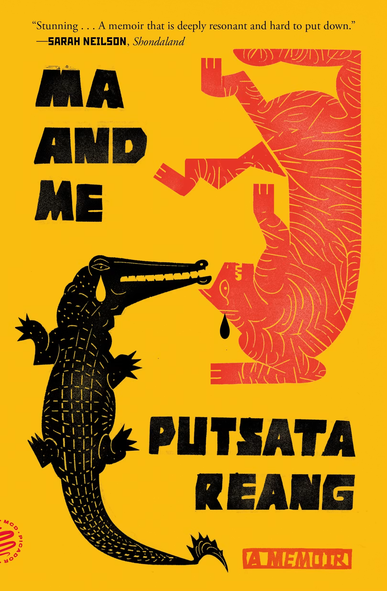

This memoir explores the intersections of Putsata Reang’s Cambodian American and queer identities, especially through the lens of her relationship with her mother. Reang recounts her mother’s early life in Cambodia. Shortly after Reang’s birth in 1974, the family left Cambodia as refugees and became the first Cambodian family in Corvallis, Oregon. Notably, they left before the Khmer Rouge genocide began, and Reang, especially on visits back to Cambodia, addresses a level of guilt and debt her family felt they owed to their relatives who endured the genocide. When Reang was a child, the family spent summers working on farms around Corvallis. Reang attended the University of Oregon and began pursuing a career as a journalist, which eventually took her to live in Cambodia; in this, she was also motivated by her interest in connecting with her Cambodian identity. As a young woman, Reang realizes she is gay, and over decades, this boils into conflict with her mother, especially when Reang meets April, her future wife. Debt to one’s parents is a major theme of the memoir, and Reang explores what it means to love and respect her mother while also facing her rejection. Drawing on a folktale about facing a crocodile and tiger (which is represented on the cover), Reang underscores the impossibility of the situation with the repeated question, “What do you do when you cannot go in the water or come up on land?”
I first read Ma and Me before I had any clue I would move to Corvallis. I mentioned the book in my job interview for my position at Oregon State and taught it twice in my first year here. As a queer Asian American woman, I already found the memoir to be a deeply personal read, but moving to Corvallis made it even more so. In a lot of ways, Reang guided my understanding of my new home. In my first weeks here, I drove down Ironwood Avenue, where the Reangs had lived, like it was a local landmark.
Reading Ma and Me was also my introduction to the Willamette Valley’s agricultural landscapes. Reang writes, “Corvallis was and still is a tapestry of endless farm fields,” noting that “the lushness of the land reminded [her] parents of home, of their village in Cambodia” (77). She describes summers working in the fields with her family to earn extra cash. They picked strawberries, then blueberries, then raspberries and boysenberries, “and sometimes [they] picked snow peas, green beans, and peaches, or gathered garlic and filberts scattered in dry dirt” (124). Reang notes, “The fields attracted mostly immigrant families like ours” (133). Working all summer, Reang came to know the landscape through pollen-induced asthma attacks and berry-stained hands. “It was beautiful, there in the Willamette Valley,” she reflects, “but most of the time we were too tired to look” (130).
Hard labor underpinned the family’s life in Oregon (as well as, Reang later discovered, supported extended family back in Cambodia). Reang mentions that her mother worked at Oregon State, first as a janitor in Bexell Hall and later as a dining hall chef. Reang’s mother proudly brags to her that she was selected to open a new Asian-themed stall in the dining hall; my students have told me that this feature, Ring of Fire, still exists. Reading about Reang’s mother has inspired my students to pay more attention to all those who make their time at the university possible.
Ma and Me also reveals to me how much Corvallis has changed over the last several decades. It’s larger and a little less white. Most of the local businesses Reang mentions in the memoir are now closed. Wilson Elementary School, which the Reang kids attended, was renamed in 2021 after Letitia Carson (an important figure in local history), but as I write this, it’s about to close its doors because district enrollments have dropped. Most of the names I recognize from the book are of berry farms—Wilt’s, Anderson Blues.
The Reang family also no longer lives in Corvallis. Reang frames this memoir as her search for home. She crosses oceans, trying to connect with her Cambodian roots, touching down briefly to visit her parents in their new home in Keizer, Oregon. She’s caught between Cambodia and the U.S., between her mother’s expectations and her own reality. It’s only when she meets her future wife that she finds some resolution: “home was not a place for me. Home was a person. Home was her,” Reang writes (353). Yet even if Oregon isn’t ultimately home in Reang’s story, it’s an important point of origin—where she began her career, where she first realized she was gay, and, where, working the fields, she first felt her mother’s deep love intertwined with exacting expectations.
Putsata Reang was born in Cambodia in 1974 and left the country with her family as an infant. They resettled in Corvallis, Oregon, where Reang and her siblings grew up. Reang studied journalism at the University of Oregon. Her long career as a journalist took her from internships at local Willamette Valley papers to full-time jobs at major West Coast papers to mentoring emerging journalists in Cambodia and Afghanistan, and she currently lives in the Seattle area with her wife. Reang previously wrote a true crime book; Ma and Me is her first full-length creative work.
Bernard Malamud, A New Life (1961)
- Campus novel set in a fictionalized Corvallis
Gabby Rivera, Juliet Takes a Breath (2016)
- Queer coming-of-age novel
